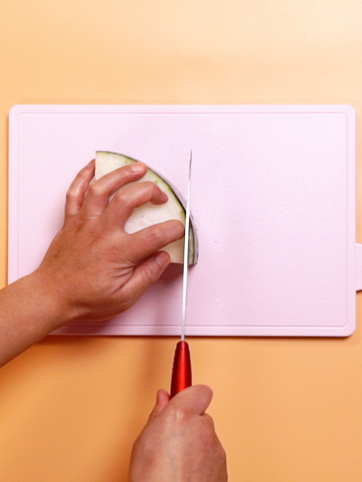
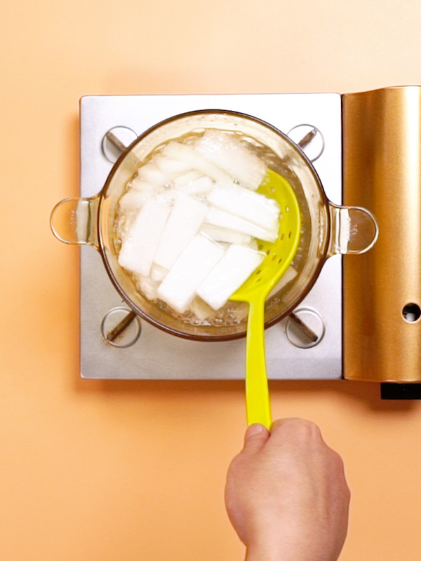
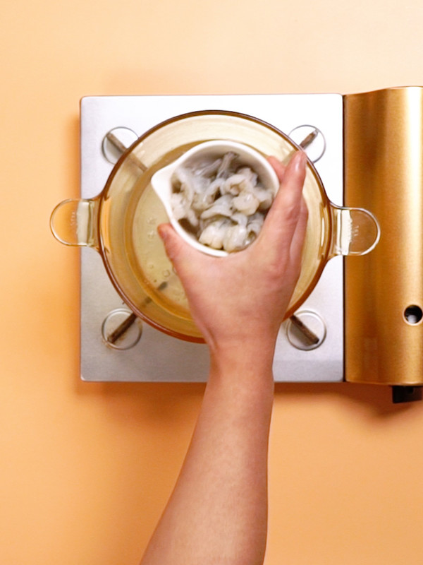
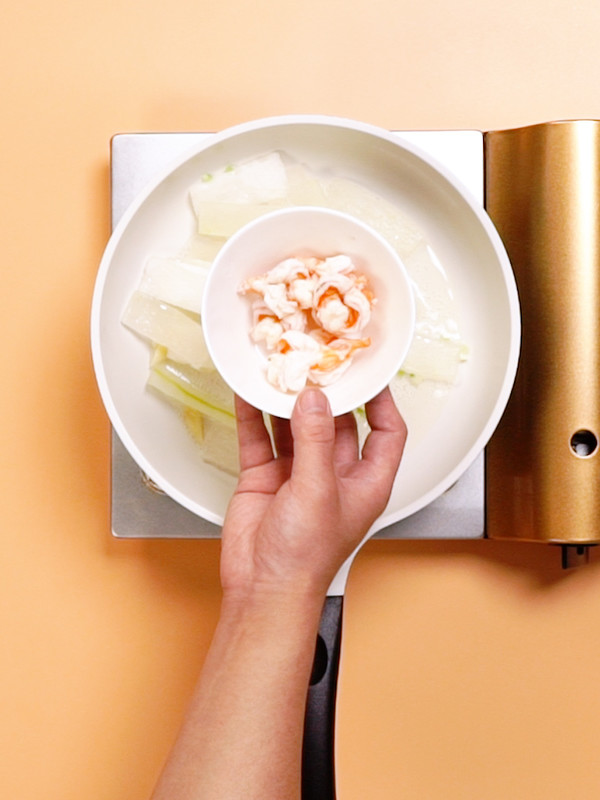
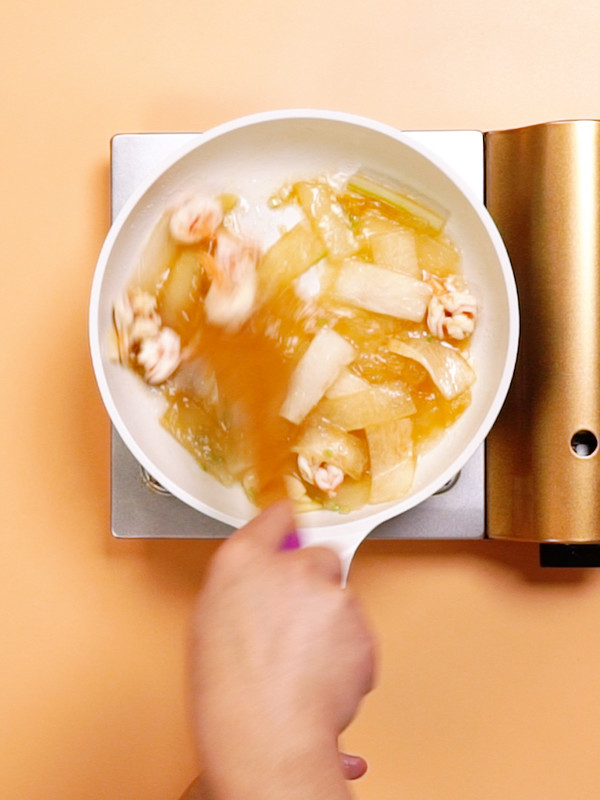
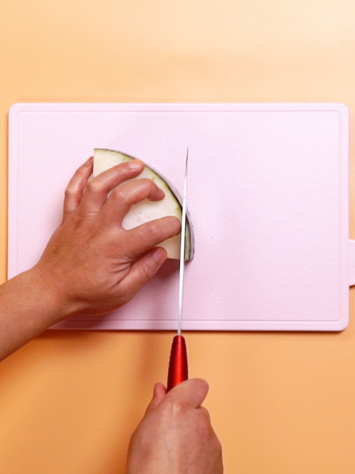
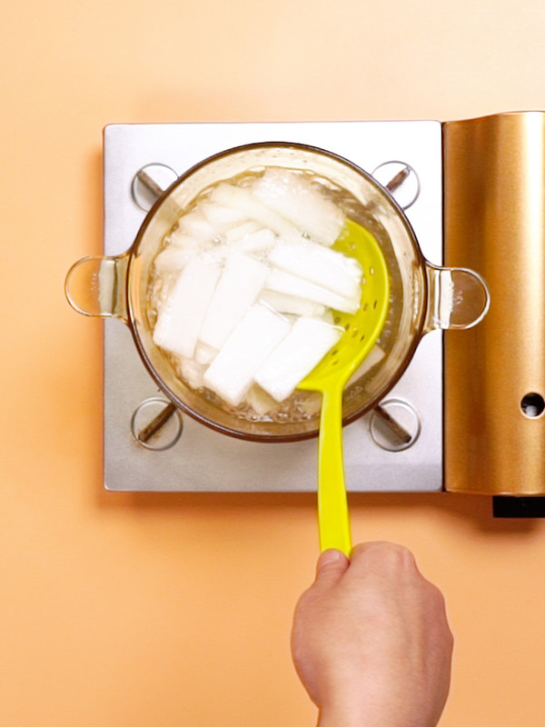
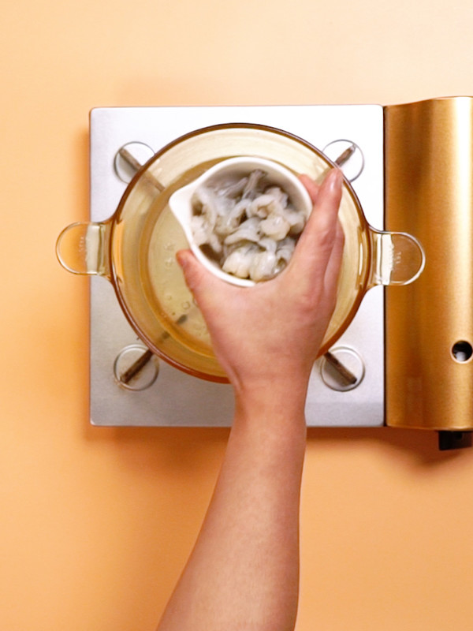
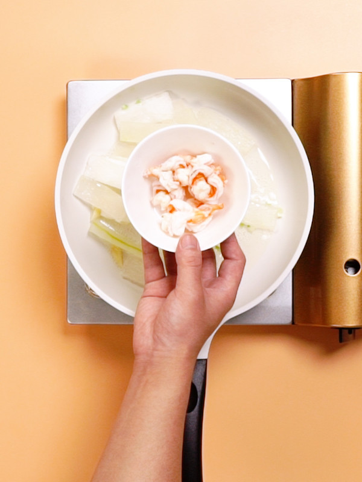
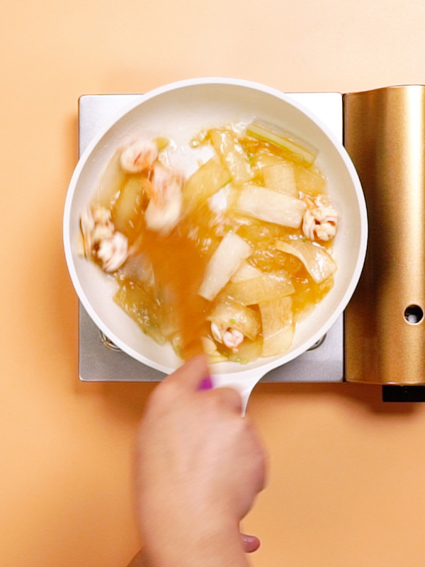

冬瓜炒虾仁的做法
1.虾仁开背去虾线，冬瓜去皮切条
2.冬瓜条开水下锅，水煮一分钟
3.虾仁开水入锅，水煮10秒
4.锅中放油，导入葱末，姜片，蒜片，冬瓜，虾仁，鸡粉，盐，搅拌均匀
5.加入水淀粉，大火收汁
| 主料： | 虾仁 | 冬瓜 |
| 辅料： | 蒜 | 姜 |
| 葱 |
1.虾仁开背去虾线，冬瓜去皮切条
2.冬瓜条开水下锅，水煮一分钟
3.虾仁开水入锅，水煮10秒
4.锅中放油，导入葱末，姜片，蒜片，冬瓜，虾仁，鸡粉，盐，搅拌均匀
5.加入水淀粉，大火收汁
版权所有：©美食世界